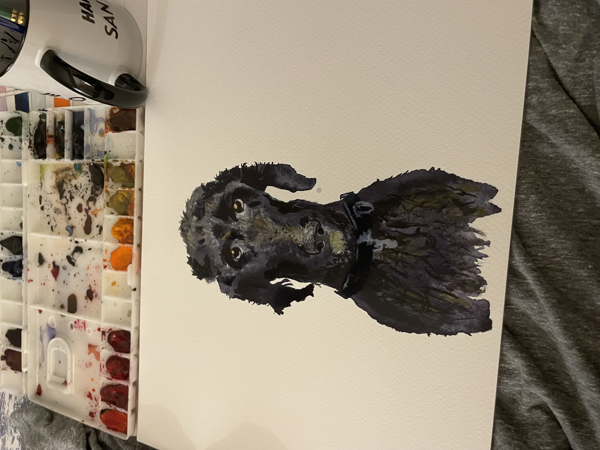
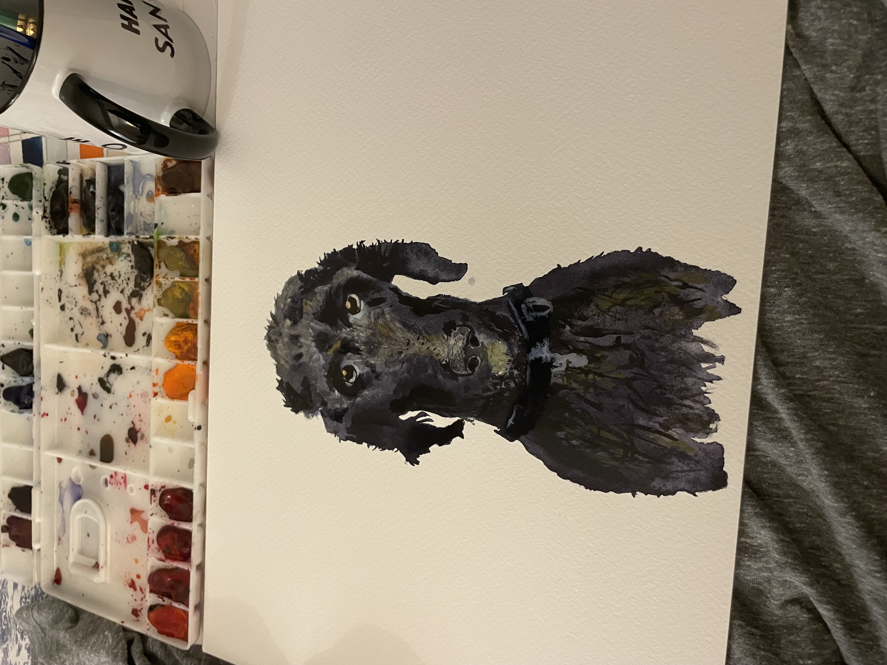
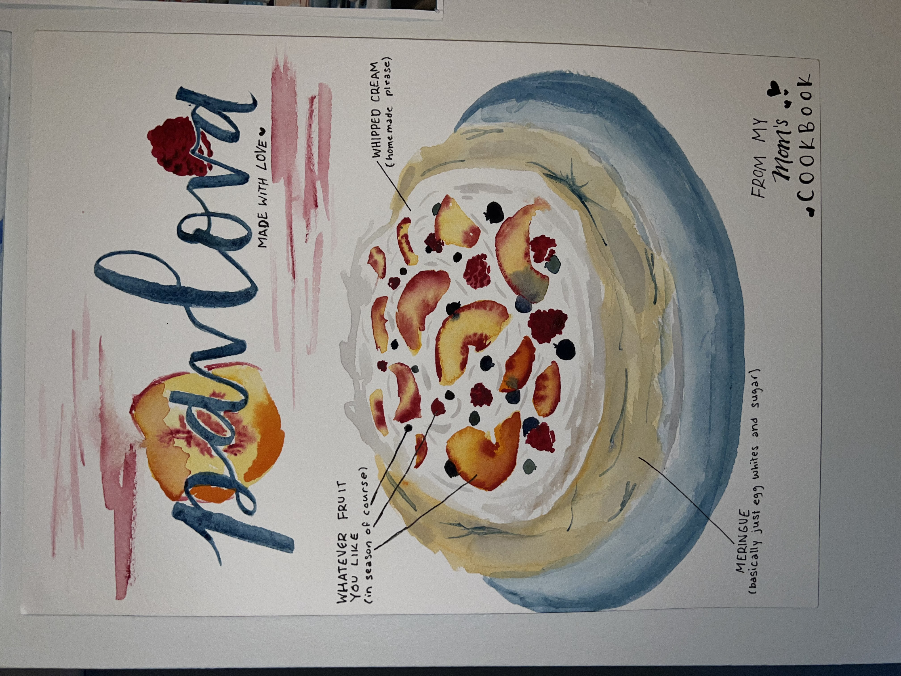
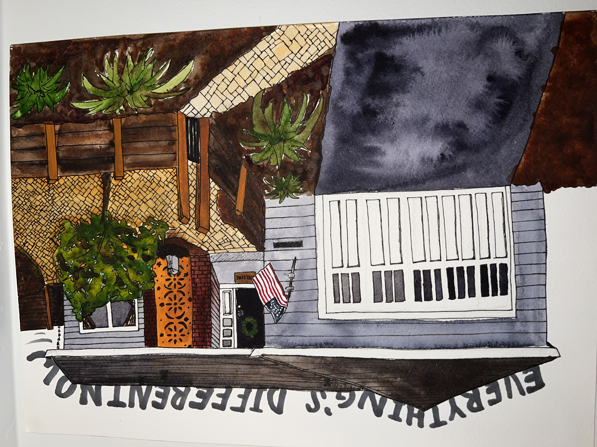

GEORGIA
This is a portrait I painted a few weeks into school when I was missing my dog like crazy.
This is a portrait I painted a few weeks into school when I was missing my dog like crazy.
When I moved in for my second year of college, my mom gave me a cookbook filled with printed recipes that she knew I would miss. I want to honor this gesture and her cooking by creating a cookbook filled with illustrations of all of my favorite foods that she makes for me. This is the first page.
This is a painting/drawing I did of my childhood home, prior to its repainting while I was gone. You can sort of guess how I felt about my parents changing things while I was away…
I love watercolor and I often paint when I am bored, tired, emotional, or inspired. Here are a couple extra paintings I’ve done that I love.